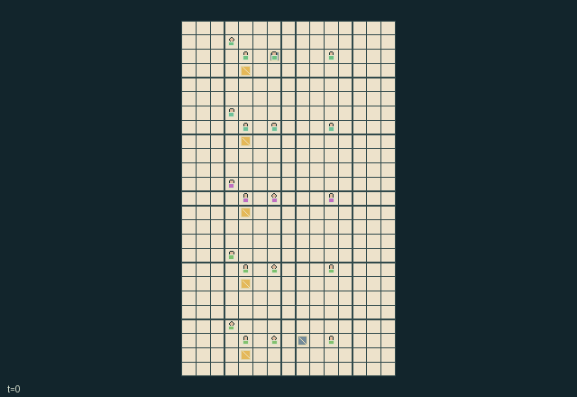

GI249 · Skyline Lunch Lifts

Serve six correct recipes at each of five kitchens, using finite pantry stock and shared lifts while controlling spoilage and power use.
Identity and original contract
20 independently actionable roles; 20 discrete commands per role; 196 native observation columns per role; original horizon 640 steps. Declared per-step reward range: -2 to 2. Observation regime: partially_observable.
Source SHA-256: d43097c9332aa5d61174c002bd33b649d88c7994e0dae8a761c0b93d1a038e58
The objective, rewards, population, map and horizon remain original. A preview is not a success claim.
Objective and gameplay
Serve six correct recipes at each of five kitchens, using finite pantry stock and shared lifts while controlling spoilage and power use.
Loading opens a real landing barrier that a different cook must secure. Freezers share paired-floor power with ovens and lift departures. Items, tickets, hot meals and dirty dishes physically travel in hands or lift cabins.
- 20 independent cooks work on five connected floors. The left stairwell connects floors; two lifts transport one physical item each.
- Raw ingredients are chopped, placed in an oven, collected after its timer reaches zero, and served only when their recipe matches the local ticket.
- Loading or unloading opens the lift barrier. A different cook must secure it before departure; the open barrier also blocks entry to that cabin square.
- Two neighboring kitchens share a circuit. Freezers prevent aging but reduce oven speed and can prevent lift departures.
- Every served meal becomes a dirty dish in the server hand. Sinks empty carried dishes and clear local dish backlog.
- Ticket knowledge may be carried or signaled locally. Two consenting neighboring cooks may hand an item, its recipe and age to one another.
- This original kitchen uses warm counters, colored workers and steel lifts. Human control and replay must use these native transitions; none has been executed here.
Ending: Joint natural completion when all five kitchen delivery counters reach six. Otherwise H=640 ends the shift; all twenty cooks remain active until joint completion.
What this game explores
Resource commons & externalities: An action changes a persistent resource or burden that another role also encounters. Compare extraction with maintenance and record the downstream resource trajectory.
Complementary production & service: A useful outcome requires ordered stages, scarce equipment or another role's capability. Measure real completed products and resource circulation rather than counting intermediate actions as success.
Joint transport & shared access: Positions, load geometry, occupancy and persistent access constrain whose action can succeed next. Distinguish physical handoff, shared controls and simultaneous force from a cosmetic cooperation label.
These are questions supported by rule structure, not observed learning effects.
Play it: operating walkthrough
crucibles play --game gi249Keep Python running and open its printed address. Select this game, set a seed and press Create session. The game itself is always English.
Assign a role range to Host with Assign / take over, or Assign all roles. Invite a second participant with Create player invitation, then assign a disjoint subset. Every original role is available.
For every owned role choose a legal command and press Queue. Arrow keys / WASD queue a declared directional action for the current role camera when available. Space or Advance one joint step advances everyone together. Non-directional games use the selectors.
Unqueued roles use the labelled untrained uniform-legal policy. Take over or release roles before the next step without resetting. Full-state debug is privileged and permanently logged; role cameras preserve permissions. Close the session to retain logs. Server restart does not restore sessions.
Complete command reference
IDs and English labels exactly match the manifest. Availability depends on role, resources, location and phase. An available action can still have no productive effect.
0·Wait
1·North
2·East
3·South
4·West
5·Take pantry ingredient
6·Chop ingredient
7·Load or collect oven
8·Load lift
9·Secure another cook load
10·Lift to next floor
11·Lift to previous floor
12·Unload lift
13·Toggle freezer
14·Serve matching meal
15·Wash dishes
16·Offer handoff
17·Signal recipe
18·Read and carry ticket
19·Discard carried item
Roles and capability identifiers
These original role names describe capabilities, not interchangeable skins. Check each owned role's legal selector before planning handoffs.
agent_0·kitchen 0: prep cook; independently controllable
agent_1·kitchen 0: oven cook; independently controllable
agent_2·kitchen 0: freight cook; independently controllable
agent_3·kitchen 0: ticket courier; independently controllable
agent_4·kitchen 1: prep cook; independently controllable
agent_5·kitchen 1: oven cook; independently controllable
agent_6·kitchen 1: freight cook; independently controllable
agent_7·kitchen 1: ticket courier; independently controllable
agent_8·kitchen 2: prep cook; independently controllable
agent_9·kitchen 2: oven cook; independently controllable
agent_10·kitchen 2: freight cook; independently controllable
agent_11·kitchen 2: ticket courier; independently controllable
agent_12·kitchen 3: prep cook; independently controllable
agent_13·kitchen 3: oven cook; independently controllable
agent_14·kitchen 3: freight cook; independently controllable
agent_15·kitchen 3: ticket courier; independently controllable
agent_16·kitchen 4: prep cook; independently controllable
agent_17·kitchen 4: oven cook; independently controllable
agent_18·kitchen 4: freight cook; independently controllable
agent_19·kitchen 4: ticket courier; independently controllable
Information and observation permissions
The exact self fields, finite nearest-entity slots, local map patch and public clock are the only flat observations. Entity slots sort by Manhattan distance then ID; all columns of a hidden slot are -1. Actor rendering also exposes the selected actor through its self block even if crowding removes it from nearest-eight slots. The static map layout is public. Forecast/knowledge leaves are private unless explicitly observed or messaged. Masks expose local contextual affordances. Event rendering must inherit its owning entity visibility and cannot display hidden global vectors. No renderer state is an extra policy observation.
The GIF is full-state debug and may reveal hidden entities or private state. Train on obs[agent], not the picture, state tree or another role's private row. Field slices and visibility are in the original manifest.
Reinforcement-learning integration
import jax
from crucibles_jaxmarl import make
env = make("gi249")
key = jax.random.PRNGKey(0)
key, rk, ak, sk = jax.random.split(key, 4)
obs, state = jax.jit(env.reset)(rk)
actions = env.sample_actions(ak, state)
obs, state, rewards, dones, info = jax.jit(env.step_env)(sk, state, actions)
done = dones["__all__"]Observations are float32 vectors of width 196; actions are scalar int32; masks have 20 entries. Supply all 20 roles each transition. Masked sampling is an engineering reference, not a trained learner.
step_env retains terminal data without reset. step performs outer autoreset and keeps terminal data in info["raw_state"] and info["raw_observation"]. Use dones["__all__"] for episode boundaries; separate completion, failure and time limit in analysis.
JIT or vmap equal identities and shapes. Split independent reset, policy and transition keys. Group different shapes explicitly; do not shrink the population or horizon. Host rendering stays outside training.
Training questions and fair evaluation
Define valid completion from the objective before fitting. Preserve original rewards and also report real deliveries/services, losses, resource state, unresolved episodes and per-role returns. Animation is not a reward signal.
An action changes a persistent resource or burden that another role also encounters. Compare extraction with maintenance and record the downstream resource trajectory.
A useful outcome requires ordered stages, scarce equipment or another role's capability. Measure real completed products and resource circulation rather than counting intermediate actions as success.
Positions, load geometry, occupancy and persistent access constrain whose action can succeed next. Distinguish physical handoff, shared controls and simultaneous force from a cosmetic cooperation label.
Compare memory, communication or centralized critics under matched actor information. Declare critic access; keep actor inputs role-filtered. Match partner/opponent distributions, masks, compute and checkpoint selection. Final tests never enter fitting or selection.
Independent training runs or source-pairing blocks are inferential units; episodes from one policy are not independent training replications. Save hashes, keys, versions, device, time and cost. Negative, zero, failed and indeterminate outcomes are valid. No trained checkpoint or target score is supplied.
Classification and evidence
Overlapping editorial labels are reading aids, not proof of novelty, difficulty, strategic equivalence or learning effects.
- Resource commons & externalities
- Evidence
manifest.task.objective: Serve six correct recipes at each of five kitchens, using finite pantry stock and shared lifts while controlling spoilage and power use.
- Complementary production & service
- Evidence
manifest.task.objective: Serve six correct recipes at each of five kitchens, using finite pantry stock and shared lifts while controlling spoilage and power use.
- Evidence
manifest.task.interaction: Loading opens a real landing barrier that a different cook must secure. Freezers share paired-floor power with ovens and lift departures. Items, tickets, hot meals and dirty dishes physically travel in hands or lift cabins.
- Evidence
manifest.actions.5: Take pantry ingredient
- Joint transport & shared access
- Evidence
manifest.task.objective: Serve six correct recipes at each of five kitchens, using finite pantry stock and shared lifts while controlling spoilage and power use.
- Evidence
manifest.task.interaction: Loading opens a real landing barrier that a different cook must secure. Freezers share paired-floor power with ovens and lift departures. Items, tickets, hot meals and dirty dishes physically travel in hands or lift cabins.
- Evidence
manifest.actions.8: Load lift
Source, receipts and preview limits
The world-only English GIF replays saved untrained legal actions through the original kernel. At most 25 actual endpoints include initial and terminal state; no invented interpolation. It is full-state debug, not the role observation.
Original source, observation slices, manifest and mechanism
Native receipt · Presentation receipt
Engineering passes do not establish learning. Nonzero floating differences remain recorded and undetermined; no new tolerance was introduced. Human scores remain unverified.